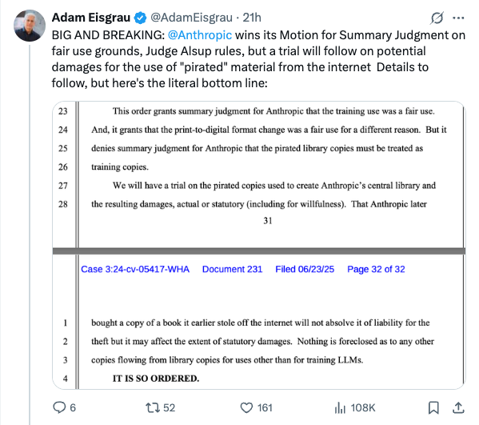

mjbommar_Anthropic在版权案中获判合理使用，但仍面临损害赔偿审判
发布时间: 2025-06-24T11:58:06.000Z Anthropic公司在与版权相关的诉讼中取得重大进展，其合理使用动议获得法官Alsup的即决判决支持。这意味着Anthropic在初步阶段被认定其行为符合合理使用原则。然而，尽管赢得了合理使用判决，公司仍将面临关于使用“盗版”材料可能造成的损害赔偿的审判。此案后续进展值得关注，对AI内容生成和版权界限具有重要影响。
2025-06-24
Anthropic公司在与版权相关的诉讼中取得重大进展，其合理使用动议获得法官Alsup的即决判决支持。这意味着Anthropic在初步阶段被认定其行为符合合理使用原则。然而，尽管赢得了合理使用判决，公司仍将面临关于使用“盗版”材料可能造成的损害赔偿的审判。此案后续进展值得关注，对AI内容生成和版权界限具有重要影响。
迪士尼与环球影业对图像生成公司Midjourney提起诉讼，指控其未经授权使用受版权保护内容训练模型并生成侵权图像。诉讼称Midjourney生成了蜘蛛侠、钢铁侠等角色图像，有时甚至无需明确提示。此案旨在阻止内容分发，并索赔每张图片高达15万美元的损害赔偿。
Google DeepMind宣布推出Gemini机器人设备端AI，旨在将AI能力带到本地机器人设备。此次发布包括可在GPU上运行的设备端VLA，以及用于双臂灵巧操作的开源MuJoCo模拟器和基准测试，旨在扩大研究人员和开发者对这些模型的访问权限。
Warp公司发布了Warp 2.0，这是一款创新的智能体开发环境。该平台被誉为顶级的整体编码智能体，在Terminal-Bench和SWE-bench基准测试中表现出色，分别达到第一名和71%的成绩。Warp 2.0支持智能体多线程，能够同时进行功能构建、调试和部署，旨在成为首个一体化的智能体开发平台，显著提升开发效率。
Mustafa Suleyman提出AI发展新范式“辩论链”，预示AI将从单一模型“思考”转向多模型“辩论”。他强调，未来AI系统将通过模型间的讨论、调试与审议实现更高级智能，如同“集思广益”对大型语言模型同样适用，标志着AI从个体智能向群体智能的演进。
Kyle Corbitt分享了强化学习（RL）在样本效率方面的突破性进展。通过使用GRPO训练修改版ART-E（智能体RAG任务），Qwen2.5-14B在仅1个训练场景下便超越了Gemini 2.5 Flash的性能，并在16个场景下超越了O3。这一发现远超预期，展现了RL在高效训练大模型方面的巨大潜力。
普林斯顿大学陈丹琦团队针对大型语言模型在长上下文推理中KV缓存内存消耗巨大的问题，提出了一系列创新解决方案。他们引入“KV足迹”作为统一衡量标准，并定义“关键KV足迹”以确保性能不低于90%的前提下进行优化方法比较。研究发现并改进了现有驱逐方法的不足，特别是后填充驱逐的高峰值内存问题。在此基础上，团队进一步开发了PruLong，这是一种端到端的优化方法，能智能学习哪些注意力头需要保留完整KV缓存。PruLong在节省内存（KV足迹比现有方法小12%）的同时，有效保持了长上下文性能和召回任务表现，为解决LLM内存瓶颈提供了重要途径。
FilMaster是中国团队开发的首个端到端AI电影生成系统，旨在根据文本输入和参考图像自动化生成完整电影。该系统核心创新包括“多镜头协同RAG镜头语言设计模块”和“以观众为中心的电影节奏控制模块”，前者通过44万电影片段库学习导演级运镜，确保镜头连贯性；后者则通过模拟观众评审和专业后期流程优化视听元素，提升情感共鸣。实验证明，FilMaster在镜头语言表现力和节奏感染力方面显著优于现有方法，用户研究平均提升68.44%，自动评估提升58.06%，为专业级电影制作提供了突破性AI工具。
北京大学、MIT等机构提出“合成数据强化学习”（Synthetic Data RL）框架，旨在解决大型语言模型在专业领域知识不足及人工数据微调成本高昂的问题。该框架仅需任务定义，通过知识引导合成、难度自适应和高潜力样本强化学习三阶段，生成高质量领域特定数据并微调模型。实验证明，此方法在数学、医学、法律等8个基准测试中，性能绝对提升超10个点，显著超越传统监督微调和现有合成数据方法，甚至在同等数据预算下媲美或超越人工数据。该框架实现了无需人工标注的高效模型定制化，大幅降低了领域适配成本，为AI应用规模化奠定基础。
Sakana AI推出一种名为RLT（Reinforcement Learning Teacher）的新型大模型训练方法，颠覆了传统教师模型从头解决问题的模式。该方法要求教师模型像人类教师一样，根据已知解决方案提供清晰的逐步解释，而非自行求解。实验证明，通过RLT训练的7B小模型在传授推理技能方面，效果超越了671B的DeepSeek-R1，且能高效训练比自身大数倍的学生模型。此方法显著提升了训练效率，大幅降低了成本，并使小型模型也能胜任教学任务，为构建强大推理能力的LLM提供了更经济有效的新途径。
阿里巴巴夸克团队开源了OmniAvatar，这是一种创新的音频驱动全身视频生成模型，旨在解决现有技术在面部动画、自然同步及全身动作生成方面的局限。该模型通过引入逐像素多层次音频嵌入策略和基于LoRA的训练方法，显著提升了唇动同步精度和自然动作表现，并在面部及半身视频生成方面超越现有模型。OmniAvatar支持文本提示控制，可应用于播客、人际互动、歌唱等多种场景，并能控制角色情绪。尽管其在长视频一致性、复杂文本控制及推理速度方面仍存在局限，但其在虚拟人视频生成领域取得了重要突破。
新加坡国立大学等机构提出“拖拽式大语言模型”（DnD），这是一种基于提示词的参数生成器，能实现大模型无需训练的自适应微调。DnD通过轻量级文本编码器和级联超卷积解码器，仅凭无标签提示词即可在数秒内生成任务专属的LoRA权重矩阵，彻底绕过梯度下降过程。该方法计算开销比传统全量微调低12000倍，在零样本学习基准测试中性能超越训练过的LoRA模型30%，并展现出强大的泛化能力。DnD为大模型快速专业化提供了高效、灵活且性能卓越的替代方案，显著提升了模型定制效率。

Claude Code Router是一款专为Claude Code设计的请求路由工具，允许用户将代码生成请求灵活地分发至不同的LLM模型，并支持高度定制化。它通过配置实现模型路由，可根据任务类型（如后台任务、推理、长上下文处理）选择最优模型，有效降低成本并提升性能。该工具还提供插件机制以扩展功能，并无缝集成GitHub Actions，为AI驱动的开发工作流提供高效且经济的解决方案。
该GitHub仓库旨在收集来自广泛使用的LLM（大型语言模型）服务的泄露系统提示。它提供了一个平台，供用户提交和验证这些提示，并强调了提交内容需附带可验证来源或可复现提示的要求。同时，仓库也提醒贡献者避免包含敏感商业源代码，以规避DMCA风险，并指出该仓库已被多篇论文引用，具有一定的学术和研究价值。

该GitHub仓库提供了多种机器学习模型和算法的Python从零实现，旨在透明且易于理解地展示其内部工作原理，而非追求极致优化。项目涵盖监督学习、无监督学习、强化学习和深度学习四大领域，包括决策树、支持向量机、K-Means、GAN、DQN等经典算法。通过丰富的示例，如多项式回归、CNN图像分类、DBSCAN聚类、生成对抗网络生成手写数字等，为学习者提供了深入理解机器学习核心概念和算法实现的宝贵资源。

在这项工作中，我们介绍了 OmniGen2，一个多功能、开源的生成模型，旨在为包括文本到图像、图像编辑和上下文生成在内的各种生成任务提供统一解决方案。与 OmniGen v1 不同，OmniGen2 为文本和图像模态提供了两个独立的解码路径，利用非共享参数和解耦的图像分词器。这种设计使 OmniGen2 能够在不重新适配 VAE 输入的情况下，基于现有的多模态理解模型进行构建，从而保留了原始的文本生成能力。为了促进 OmniGen2 的训练，我们开发了全面的数据构建管道，包括图像编辑和上下文生成数据。此外，我们引入了一种专为图像生成任务量身定制的反射机制，并基于 OmniGen2 策划了一个专门的反射数据集。尽管其参数规模相对适中，OmniGen2 在多个任务基准测试（包括文本到图像和图像编辑）上取得了有竞争力的结果。为了进一步评估上下文生成（也称为主体驱动任务），我们引入了一个名为 OmniContext 的新基准。OmniGen2 在一致性方面在开源模型中达到了最先进的性能。我们将发布我们的模型、训练代码、数据集和数据构建管道，以支持该领域的未来研究。

大型语言模型（LLM）的超长文本生成是一个广泛需求的应用场景，然而，由于其最大生成长度限制以及随着序列长度增加而导致的整体质量下降，这仍然是一个重大挑战。以往的方法，例如LongWriter，通常依赖于“教学”，即在合成的长篇输出上进行监督微调（SFT）。然而，这种策略严重依赖于合成的SFT数据，这些数据难以构建且成本高昂，通常缺乏连贯性和一致性，并且往往过于人工化且结构单调。在这项工作中，我们提出了一种基于激励的方法，该方法完全从零开始，不依赖任何标注或合成数据，利用强化学习（RL）来培养LLM生成超长、高质量文本的能力。我们从基础模型（类似于R1-Zero）开始进行RL训练，引导其在写作过程中进行推理，从而促进规划和完善。为此，我们采用了专门的奖励模型，引导LLM改进长度控制、写作质量和结构格式。实验评估表明，我们的LongWriter-Zero模型（基于Qwen2.5-32B训练）在长篇写作任务上持续优于传统的SFT方法，在WritingBench和Arena-Write的所有指标上均取得了最先进的结果，甚至超越了DeepSeek R1和Qwen3-235B等千亿级模型。我们已在https://huggingface.co/THU-KEG/LongWriter-Zero-32B开源了我们的数据和模型检查点。

近期，智能体AI已成为一个日益流行的研究领域。然而，我们认为当前智能体研究实践缺乏标准化和科学严谨性，这使得在不同方法之间进行公平比较变得困难。因此，目前仍不清楚智能体框架中不同的设计选择如何影响其有效性，并且衡量其进展仍然具有挑战性。在这项工作中，我们对GAIA基准和BrowseComp进行了系统的实证研究，以公平严谨的方式检验关键智能体组件中流行设计选择的影响。我们发现，缺乏标准评估协议使得以前的工作（即使是开源工作）不可复现，并且随机运行之间存在显著差异。因此，我们引入了一种更稳健的评估协议来稳定比较。我们的研究揭示了哪些组件和设计对于高效智能体至关重要，而其他组件和设计尽管看似合乎逻辑，却是多余的。基于我们的发现，我们构建并开源了OAgents，这是一个新的基础智能体框架，在开源项目中实现了最先进的性能。OAgents为各种智能体组件提供了模块化设计，促进了智能体AI未来的研究。

我们能否扩展4D预训练，以学习通用的时空表示，从而能够从任意时间点的少量视角重建物体，并渲染到任意时间点的任意视角？我们通过4D-LRM给出了肯定的答案，这是首个大规模4D重建模型，它能够接收来自无约束视角和时间戳的输入，并渲染任意新颖的视角-时间组合。与以往的4D方法（例如基于优化、基于几何或生成式方法）在效率、泛化性或保真度方面存在的不足不同，4D-LRM学习了一种统一的时空表示，并直接从跨时间姿态图像token中预测逐像素的4D高斯基元，从而原则上实现了无限帧率下的快速高质量渲染。我们的结果表明，扩展时空预训练能够实现准确高效的4D重建。我们展示了4D-LRM能够泛化到新物体，在时间上进行插值，并处理多样化的相机设置。它能够在单个A100 GPU上，以不到1.5秒的时间，通过一次前向传播重建24帧序列。

大型语言模型（LLMs）越来越多地应用于需要长上下文长度的场景，但随着上下文的增长，键值（KV）缓存常常成为GPU上的内存瓶颈。为解决此问题，我们提出了交换向量量化（Commutative Vector Quantization, CommVQ），以显著减少长上下文LLM推理的内存使用。我们首先引入了带有轻量级编码器和码本的加性量化来压缩KV缓存，该缓存可以通过简单的矩阵乘法进行解码。为了进一步降低解码期间的计算成本，我们将码本设计为与旋转位置嵌入（Rotary Position Embedding, RoPE）具有交换性，并使用期望最大化（EM）算法进行训练。这使得解码能够高效地集成到自注意力机制中。我们的方法通过加性量化实现了高精度，并通过RoPE交换码本实现了低开销。在长上下文基准测试和GSM8K上的实验表明，我们的方法通过2比特量化将FP16 KV缓存大小减少了87.5%，同时优于最先进的KV缓存量化方法。值得注意的是，它实现了1比特KV缓存量化，且精度损失极小，使得LLaMA-3.1 8B模型能够在单张RTX 4090 GPU上运行128K上下文长度。源代码可在以下网址获取：https://github.com/UMass-Embodied-AGI/CommVQ。

故事可视化已成为一项热门任务，其中生成视觉场景以在多个面板中描绘叙事。在此背景下，一个核心挑战是保持视觉一致性，特别是角色和对象在整个故事中的持续性和演变。尽管扩散模型取得了最新进展，但现有方法通常未能保留关键角色属性，导致叙事不连贯。在这项工作中，我们提出了一种协作式多智能体框架，该框架能够自主识别、纠正和优化多面板故事可视化中的不一致性。这些智能体在迭代循环中运行，从而实现细粒度的面板级更新，而无需重新生成整个序列。我们的框架与模型无关，可以灵活地与各种扩散模型集成，包括Flux等整流流变压器和Stable Diffusion等潜在扩散模型。定量和定性实验表明，我们的方法在多面板一致性方面优于现有方法。